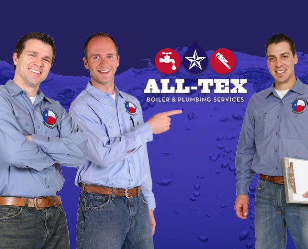
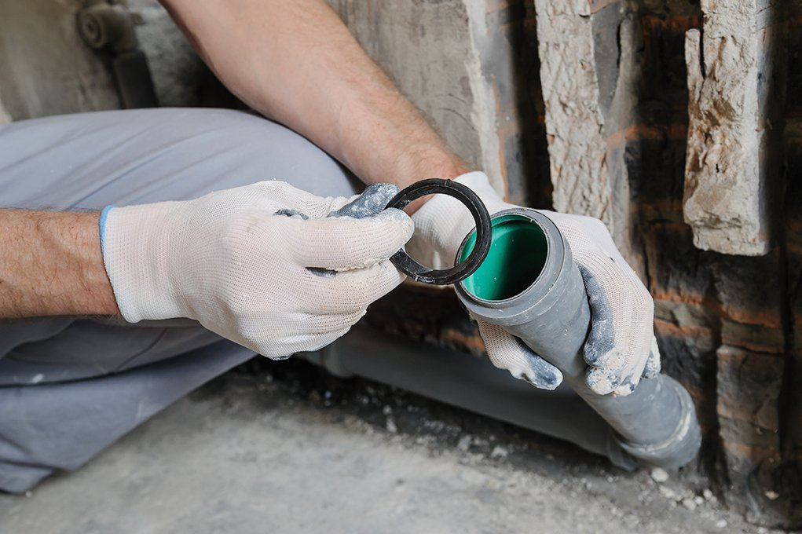

For homeowners
Residential Plumbing
Emergency repairs, fixtures, remodels and dependable everyday plumbing service.
Houston & Lafayette’s local plumbing team
Licensed master plumbers for residential, commercial and industrial service—ready around the clock, 365 days a year.

What can we help with?
Complete plumbing care
From a dripping fixture at home to a commercial mechanical room, our licensed team diagnoses the issue, explains the options and gets to work.
For homeowners
Emergency repairs, fixtures, remodels and dependable everyday plumbing service.
For businesses
Repairs, replacements and high-efficiency systems for facilities of every size.
Clear the line
Advanced diagnostics and efficient repairs for backups, stoppages and damaged lines.
Hot water restored
Tank and tankless water heater repair, replacement and professional installation.
Protect your property
Fast leak detection and pipe repair to limit damage and restore your water system.
Specialized expertise
Safe boiler repair, replacement and mechanical room design for peak efficiency.

Family owned & operated
For more than 25 years, All-Tex has delivered timely, efficient plumbing solutions to homes and businesses across Texas and Louisiana. Our licensed professionals handle everything from simple repairs to complex commercial systems.
Plumbing emergency?
Shut off the waterTurn off the main valve to help prevent flooding.
Make the area safeCut electricity near water and move valuables away.
Call All-TexA master plumber is available around the clock.
Two home bases. Regional reach.
Fast, local service throughout greater Houston, Lafayette and surrounding communities.
Bear Creek · Copperfield · Cy-Fair · Cypress · Fairfield · Jersey Village · Katy · Memorial · Spring · Spring Branch · Tomball · The Woodlands
Lafayette · Lake Charles · Baton Rouge · Opelousas and surrounding communities
Answers when you need them
Yes. All-Tex is available around the clock for plumbing emergencies in the Houston and Lafayette service areas.
Burst pipes, overflowing toilets, sewage backups, no water, major leaks, flooding and water heater failures all warrant an immediate call.
Yes. Our licensed team handles commercial repairs, remodels, boilers, replacements and system optimization.
Call Houston at 281-469-3330 or Lafayette at 337-600-4737. For an emergency, call immediately.
A master plumber is on call